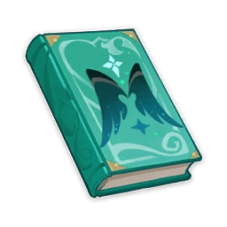

Mondstadt · Books & Literature
Gliding Instruction Manual
A Mondstadt quest-item handbook that sets out basic wind-gliding rules, then illustrates them with comic reports of three reckless flyers.

Item record and gliding rules
The Gliding Instruction Manual is a Mondstadt quest item. Its description calls it a guide for people new to wind gliders and says it is mandatory reading for a Mondstadt gliding license. The in-game entry does not name an author. Its opening rules are practical: be physically and mentally prepared, launch from a current or elevated place, watch wind and air traffic, use a glider only with a valid license, keep balance, retract it at a safe altitude, and do not drink and glide.
The six brief rules set the scene for the item’s three violation reports. Their tone mixes actual safety advice with broad comic exaggeration, so the examples should not be treated as a complete legal handbook.
Three cautionary cases
Rudolf jumps from his two-story house to make his daughter Lily happy. The fall fractures his left leg and bruises his buttocks; the manual says this could have cost Lily her father. His penalty is a warning ticket and a one-year suspension of his gliding license.
A second report concerns Alice, described here as a tourist and legendary adventurer. She creates a wind current at Windrise by blasting an Anemo Slime, then uses it to climb and perform aerial stunts. The crowd applauds, but Acting Grand Master Jean summons Alice and gives her ten days of detention. The report does not say that every use of an Anemo Slime or every acrobatic flight is treated this way; it is a single example in the manual.
The final case is Six-Fingered José, a bard who attempts to play the lyre and sing while gliding. He falls head-first into a wishing well in front of the crowd. He suffers minor bruising, while his lyre and glider are badly damaged. The manual says his license is suspended for five years and that he must perform community service for three months.
The manual and Amber’s borrowed fable
During Amber’s Story Quest, Lepus Chapter: Act I, “Wind, Courage, and Wings,” Amber first hands the Traveler a thick book and calls it a gliding manual. Reading it reveals a different text: a fable about young birds asking the Anemo God how to fly. They try a stronger wind, but the story’s lesson is that what they lacked was courage. Amber later admits that this is a book she used to read as a child and that it is not the dry manual she meant to lend.
The actual Gliding Instruction Manual is a separate item received as a quest reward near the end of the act. The quest’s fable, its “Wind, Courage, and Wings” act title, and the rules-and-violations handbook are related through Amber’s licensing exam, but they are not the same book. The story’s bird characters are a fable, not evidence about the literal origin of birds or gliding in Teyvat.
What the item does and does not establish
The handbook establishes that Mondstadt requires a license for gliding and gives the reader a short set of rules plus three examples of penalties. Amber’s Story Quest supplies the context: she oversees the Traveler’s exam, lends the wrong book at first, and eventually awards the license after the Raptor case is resolved.
The item does not credit Amber as its author, and the quest does not identify who wrote the handbook. Nor does it provide the full text of Mondstadt’s gliding laws. The hyperbolic violations are best read as in-world safety anecdotes with a comic voice, alongside the quest’s separate fable about courage.
This is an original CoreGG reading guide, not an official HoYoverse article or a reproduction of the game text. Source links below identify the records used so you can check the original context.
Sources & references
Check these sources for the original game text and reference trail.